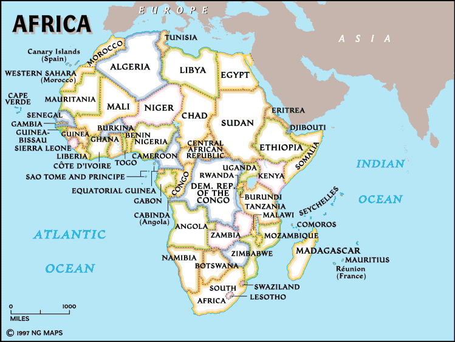

African Map of Argo/UML Activity
Red pins are Argo/UML users. Blue pins are Argo/UML contributors. World Map

To add a dot for yourself to this map:
- Position your mouse cursor over your location and click to go to a confirmation
form.
- You new dot will appear when the maps are next updated.